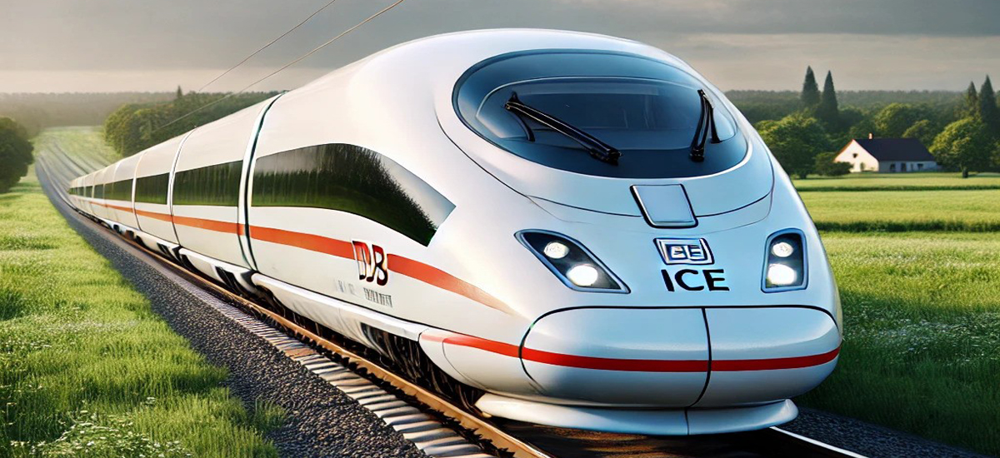

DB ICE
ICE 3 или Intercity-Express 3 е фамилия от високоскоростни електрически влакове с множество влакове, произведени от Siemens и Bombardier. ICE 3 се експлоатира главно от Deutsche Bahn (DB), но също и от холандския железопътен оператор Nederlandse Spoorwegen (NS).

Флагманът на високоскоростната железница в Германия,
семейството включва класове 403, 406, 407 и 408, които са известни съответно като ICE 3, ICE 3M, New ICE 3 и ICE 3neo.
Три мултисистемни влака, известни като ICE International, се използват в Холандия.
Влаковете ICE 3 работят и по трансгранични маршрути до Холандия, Белгия и Франция. Влаковете ICE 3 работят с националната максимална скорост на високоскоростните железопътни линии от 320 км/ч в Германия, но изместиха конкуренцията си в този списък поради факта, че клас 403 е разрешен да се движи със скорости от 330 км/ч на високи -скоростна линия между Франкфурт и Кьолн за преодоляване на закъсненията. ICE 3 класове 403 и 406 достигнаха максимална скорост от 368 км/ч при пробни пускания.
ICE 3M/F беше вдъхновението за влаковете Velaro на Siemens,
които се използват в Германия, Белгия, Франция, Обединеното кралство, Холандия, Испания, Китай, Русия и Турция. Египетските национални железници също са поръчали 41 влака от осем вагона ICE.
Система
Влаковете ICE, оперирани от Deutsche Bahn, представляват основния високоскоростен транспорт в Германия, свързвайки важни градове като Берлин, Мюнхен, Хамбург и Франкфурт. Те функционират с честота от 30 до 60 минути, което осигурява удобно и редовно обслужване за пътниците. Поддръжката се извършва главно през нощта, когато влаковете не са в движение, за да се гарантира тяхната ефективност и безопасност. В зависимост от модела, влаковете ICE могат да имат между 7 и 14 секции и да превозват голям брой пътници както в първа, така и във втора класа. Стандартната работна скорост е 250-300 км/ч, но в някои участъци на специално изградени трасета влаковете достигат максимална скорост от 330 км/ч. ICE влаковете не само покриват вътрешни маршрути в Германия, но и предлагат международни линии, свързващи градове в Франция, Нидерландия, Австрия и Швейцария. Системата ICE е проектирана да предлага надеждност, комфорт и бързина, позволявайки на пътниците бързо придвижване между ключови дестинации. Например, пътуването от Франкфурт до Кьолн отнема само около час, правейки ICE предпочитан избор за бизнес пътници и туристи.
Конструкция
Конструкцията на влака ICE е проектирана с фокус върху скорост, сигурност и комфорт, като същевременно отговаря на най-високите стандарти за екологична ефективност. Корпусът е изграден от олекотени алуминиеви и стоманени компоненти, което позволява на влака да поддържа висока скорост, като същевременно намалява енергийните разходи. Аеродинамичната форма на предната част допринася за намаляване на въздушното съпротивление и осигурява по-ефективно движение при високи скорости. Електрическата система на ICE се състои от мощни асинхронни двигатели, които позволяват плавно ускорение и бързо спиране при необходимост. Високотехнологичната система за контрол на скоростта включва автоматични функции за спиране и адаптиране на скоростта при промяна на условията, което гарантира безопасността на пътниците дори при високоскоростни условия. Интериорът на влака е проектиран с мисъл за комфорта на пътниците – включва шумоизолация, климатичен контрол и ергономични седалки, които предлагат допълнителен комфорт при дълги пътувания. Влакът разполага със съвременна система за автоматично диагностициране, която следи състоянието на компонентите в реално време и позволява ранно откриване на евентуални проблеми, като по този начин се увеличава надеждността и безопасността на ICE. С конструкцията си, DB ICE съчетава иновации и високи стандарти, които го правят предпочитан избор за бързи и удобни пътувания както в Германия, така и в международен план.
Данни за влака DB ICE
- Оператор: Deutsche Bahn (DB)
- Интервали на движение: Влаковете ICE обикновено оперират на 30-минутни до 1-часови интервали.
- Работно време: 24/7, с поддръжка извършвана през нощните часове.
- Състав на влака: Варира от 7 до 14 секции, в зависимост от модела.
- Скорост: Нормална работна скорост от 250-300 км/ч, с максимална тествана скорост до 330 км/ч.
- Маршрут: Основните маршрути свързват ключови градове в Германия, както и международни дестинации като Париж, Амстердам, Виена и Цюрих.
- Продължителност на пътуването: Бързо придвижване между големите градове в Германия, като например от Франкфурт до Кьолн за около 1 час.